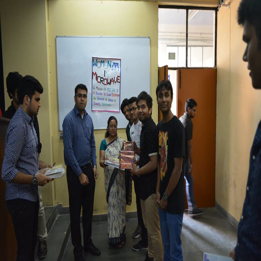

IEEE MSIT Technical Project Exhibition - Second Prize Winner
We built Legitimize ,which is a free web builder and entrepreneur partner finding platform for women entrepreneurs. Since it can be really challenging for small scale women entrepreneurs to hire dev guys, we developed a web builder system that lets them make their own websites with no prior tech knowledge required, by drag and drop functionality. Not just that, we have a dedicated peer to peer chat and video call system, available for women to find like minded women in their space so that they can collaborate, develop and grow together.
